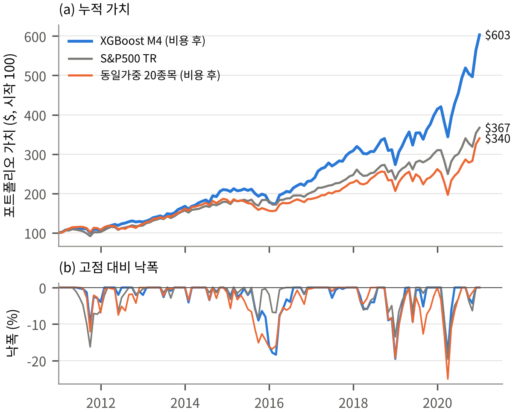
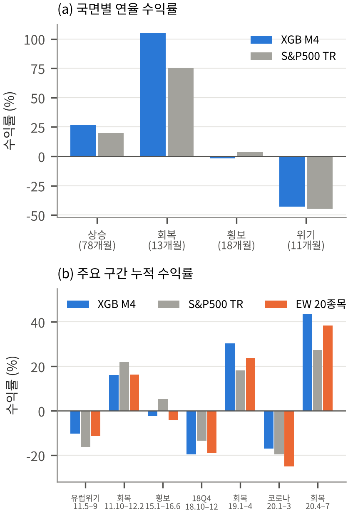
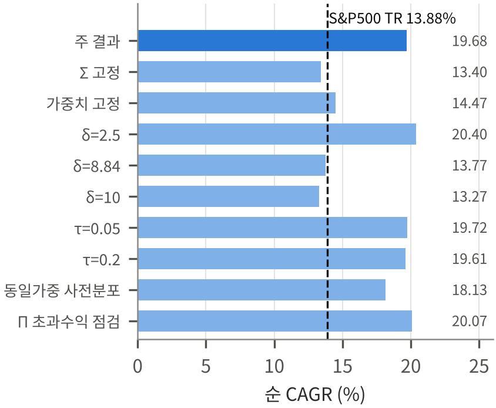

10년 표본 외 백테스트 성과 분석 및 40개 조합 비교
2011년 1월부터 2020년 12월까지 120개월 동안 수행된 5개 ML 모델 × 8개 뷰 구성법(총 40개 전략 조합)의 전체 성과 매트릭스, 연도별·시장국면별·역사적 에피소드별 수익률, 20개 종목의 동적 비중 변화, 그리고 강건성 및 파라미터 민감도 분석 결과를 총망라합니다.
1 40개 전략 조합 (5 Models × 8 View Methods) 인터랙티브 탐색기
우측 버튼으로 Net CAGR (%), Net Sharpe Ratio, 월평균 턴오버 (%) 지표를 전환하여 비교할 수 있습니다.
| ML Model \ View Method | M1_SMB(Rolling) |
M1_SMB_fixed(Static) |
M2_HML(Rolling) |
M2_HML_fixed(Static) |
M3_SMB_HML(Rolling) |
M3_SMB_HML_fixed(Static) |
M4_Identity(Absolute, $P=I$) |
M5_Proportional(Cross-Sec) |
|---|
40개 조합의 Net CAGR 분산을 분해한 결과, 뷰 행렬 구성 방식($P$)이 전체 분산의 85.3%를 설명하며, ML 모델 종류는 4.5%, 모델×뷰 상호작용이 10.2%를 설명합니다.
• M4_Identity ($P=I_{20}$)의 압도적 우위: 5개 ML 모델 모두 M4와 결합할 때 최고 성과를 기록했습니다 (XGBoost 19.68%, Elastic Net 19.46%, RandomForest 18.85%, Transformer 17.40%, ANN 15.07%). 20개 종목에 대한 개별 예측치를 손실 없이 20개의 독립 절대 뷰로 주입하기 때문입니다.
• 팩터 상대 뷰(M1~M3) 및 단일 비례 뷰(M5)의 한계: 20차원 예측 벡터를 단 1~2개의 롱숏 포트폴리오 수익률($K=1,2$)로 집약하면 자유도 손실로 인해 사후 기대수익률 $\mu_{BL}$이 시총 균형 사전분포($\Pi$, CAGR 13.90%) 근방인 13.4%~14.5%에 머물게 됩니다.
• 롤링 vs 고정 팩터 로딩: M1~M3 내에서는 36개월 롤링 로딩이 2000–2010 고정 로딩보다 일관되게 약 +0.3~+0.6%p 높은 CAGR과 낮은 턴오버를 달성하여, 시간에 따라 변하는 기업의 규모·가치 특성을 반영하는 것이 유리함을 보여줍니다.
2 연도별 수익률 비교 및 누적 성과 추이 (2011–2020)
메인 전략(XGBoost × M4)은 10개 연도 중 7개 연도에서 S&P 500을, 9개 연도에서 동일종목 균등비중(EW20)을 앞섰습니다.
| 연도 (Year) | Main (Net) | Main (Gross) | S&P 500 TR | Equal-Weight 20 (Net) | S&P 500 대비 초과수익 (Net) | EW 20 대비 초과수익 (Net) | 주요 시장 배경 및 포트폴리오 동학 |
|---|---|---|---|---|---|---|---|
| 2011 | +6.98% | +7.60% | +2.11% | +7.07% | +4.87%p | -0.09%p | 미국 신용등급 강등 및 유럽 재정위기 속 방어·우량주 선방 (연간 턴오버 290.2%) |
| 2012 | +19.26% | +19.72% | +16.00% | +14.35% | +3.26%p | +4.91%p | QE3 유동성 장세, AAPL·CNI·PCP 강세 포착 (연간 턴오버 190.1%) |
| 2013 | +31.18% | +32.98% | +32.39% | +32.24% | -1.21%p | -1.06%p | 광범위한 강세장 속 Gross(+32.98%)는 지수 상회, 리밸런싱 비용 후 소폭 하회 (턴오버 684.0%) |
| 2014 | +24.67% | +26.71% | +13.69% | +13.54% | +10.98%p | +11.13%p | 하반기 국제유가 급락 시 에너지주 비중 축소 및 AAPL·UGI 집중 (턴오버 810.5%) |
| 2015 | -14.65% | -14.18% | +1.38% | -15.18% | -16.03%p | +0.53%p | 원자재·에너지 폭락으로 선정 유니버스(EW20 -15.18%) 전반 조정 (턴오버 276.8%) |
| 2016 | +30.27% | +31.13% | +11.96% | +19.13% | +18.31%p | +11.14%p | PCP·GMCR·STR 인수 상장폐지 현금 회수 및 산업재(CMI, CNI) 급반등 (턴오버 330.5%) |
| 2017 | +32.86% | +35.27% | +21.83% | +22.79% | +11.03%p | +10.07%p | 글로벌 동반 성장기, AAPL·ANSS·CMI 상한 배분 적중 (턴오버 900.5%) |
| 2018 | -11.37% | -10.79% | -4.38% | -9.62% | -6.98%p | -1.75%p | 미·중 무역분쟁 및 4분기 연준 금리인상 발 기술·산업주 조정, PX 상장폐지 (턴오버 321.7%) |
| 2019 | +51.66% | +52.06% | +31.49% | +27.07% | +20.18%p | +24.59%p | 연준 완화 전환, AAPL·ANSS·CNI 집중 보유 및 낮은 턴오버(129.4%)로 압도적 초과수익 |
| 2020 | +45.57% | +47.83% | +18.40% | +29.84% | +27.17%p | +15.73%p | 코로나19 1분기 충격 방어(-14.95% vs S&P -19.60%) 후 빅테크·SW 급반등 (턴오버 770.4%) |

3 시장 국면(Market Regime) 및 7대 역사적 에피소드 분석
S&P 500의 추세·변동성에 따라 120개월을 4개 국면으로 분류하고, 7개 주요 거시경제 이벤트 구간에서의 방어력과 상승 탄력을 검증했습니다.
| 시장 국면 (Regime) | 개월 수 | Main 연율수익 | S&P 500 연율 | EW 20 연율 | vs S&P 500 | vs EW 20 |
|---|---|---|---|---|---|---|
| 상승장 (Bull) | 78개월 | +27.03% | +19.95% | +20.24% | +7.08%p | +6.79%p |
| 회복장 (Recovery) | 13개월 | +105.06% | +75.15% | +89.07% | +29.91%p | +15.99%p |
| 횡보·조정장 (Sideways) | 18개월 | -1.60% | +3.49% | -2.85% | -5.09%p | +1.25%p |
| 위기·급락장 (Crisis) | 11개월 | -42.79% | -44.57% | -49.18% | +1.78%p | +6.39%p |
💡 핵심 시사점: 메인 전략은 상승장(+7.08%p)과 회복장(+29.91%p)에서 S&P 500을 크게 앞지를 뿐 아니라, 위기 국면(11개월)에서도 S&P 500(-44.57%) 및 EW20(-49.18%)보다 손실 폭이 적은 -42.79%(+1.78%p 방어)를 기록했습니다. 2015–16년 원자재 침체가 포함된 횡보장(18개월)에서도 EW20(-2.85%) 대비 +1.25%p 우위를 보였습니다.
| 역사적 에피소드 (기간) | 국면 | Main (Net) | S&P 500 | EW 20 | vs S&P |
|---|---|---|---|---|---|
| 2011 유럽 재정위기 (11.05–11.09, 5m) | Crisis | -17.64% | -15.42% | -15.32% | -2.22%p |
| 2011 유럽 재정위기 이후 회복 (11.10–12.03, 6m) | Recovery | +30.86% | +25.88% | +26.86% | +4.98%p |
| 중국 쇼크·유가 횡보 (15.01–16.02, 14m) | Sideways | -13.68% | -4.43% | -15.51% | -9.25%p |
| 2018 4분기 급락 (18.10–18.12, 3m) | Crisis | -17.07% | -13.52% | -13.09% | -3.55%p |
| 2018 4분기 급락 이후 회복 (19.01–19.04, 4m) | Recovery | +22.25% | +18.25% | +18.76% | +4.00%p |
| 코로나19 위기 (20.01–20.03, 3m) | Crisis | -14.95% | -19.60% | -17.87% | +4.65%p |
| 코로나19 이후 회복 (20.04–20.06, 3m) | Recovery | +32.78% | +20.54% | +24.66% | +12.24%p |

4 포트폴리오 보유 종목 비중 동학 (Holdings & Weight Dynamics)
단일 종목 20% 상한($w_i \le 0.20$) 하에서 시총 균형 사전분포와 ML 예측 뷰가 결합되어 매월 동적으로 비중이 조정됩니다.
| 순위 | Ticker | 기업명 (Company Name) | 평균 비중 | 비중 표준편차 | 최소 비중 | 최대 비중 | 보유 월수 (>0.1%) | 20% 상한 도달 월수 (비율) |
|---|
5 강건성(Robustness) 및 하이퍼파라미터 민감도(Sensitivity) 분석
동적 리밸런싱의 기여도를 검증하고, 위험회피계수($\delta$), 사전분포 스케일($\tau$), 사전분포 구조($\Pi$) 변화에 따른 성과 안정성을 확인했습니다.
| 실험 설정 (Configuration) | Net CAGR | 연율 변동성 | Sharpe (GS1) | MDD | 월평균 턴오버 |
|---|---|---|---|---|---|
| Main (Rolling $\Sigma_t$ + Monthly Dynamic Weights) | 19.68% | 16.11% | 1.15 | -19.55% | 39.20% |
| Fixed $\Sigma$ (초기 36개월 공분산 행렬 고정) | 20.20% | 16.15% | 1.17 | -19.52% | 35.67% |
| Fixed Weights (2010.12 첫 달 최적비중 고정) | 16.07% | 15.12% | 1.01 | -16.25% | 0.83% |
🔍 해석: 첫 달(2010.12) 비중을 10년간 고정할 경우 CAGR은 16.07%(Sharpe 1.01)에 머무는 반면, 매월 ML 뷰를 갱신하여 리밸런싱하는 메인 전략은 거래비용(연 1.13%p)을 차감하고도 19.68%(+3.61%p 순부가가치)를 달성합니다. 한편 공분산 $\Sigma$를 초기 구간에 고정해도 ML 뷰가 살아 있으면 20.20%를 기록하여, 성과의 핵심 동력이 공분산 시변성보다 월별 ML 예측 뷰($Q_t$)의 시변 갱신에 있음을 확증합니다.
| 파라미터 설정 | Net CAGR | 연율 변동성 | Sharpe (GS1) | MDD | 월평균 턴오버 |
|---|---|---|---|---|---|
| $\delta = 1.50$ (적극적 위험감수 · ML 뷰 가중 확대) | 21.23% | 17.59% | 1.14 | -19.51% | 46.50% |
| $\delta = 2.09$ (1926–2010 장기 시장 내재 $\delta$) | 21.14% | 17.13% | 1.17 | -18.78% | 43.84% |
| $\delta = 3.00$, $\tau = 0.10$ (Main Baseline) | 19.68% | 16.11% | 1.15 | -19.55% | 39.20% |
| $\delta = 6.00$ (보수적 위험회피 · 사전분포 비중 확대) | 16.92% | 14.70% | 1.09 | -19.62% | 30.86% |
| $\delta = 8.84$ (20종목 표본 내 편향 추정치) | 13.77% | 15.32% | 0.87 | -21.74% | 20.38% |
| $\tau = 0.025$ ($\mu_{BL}$ 불변, $\Sigma_{BL}$ 스케일 변화) | 19.72% | 16.18% | 1.15 | -19.51% | 40.48% |
| $\tau = 0.05$ ($\mu_{BL}$ 불변, $\Sigma_{BL}$ 스케일 변화) | 19.72% | 16.16% | 1.15 | -19.52% | 40.04% |
| $\tau = 0.20$ ($\mu_{BL}$ 불변, $\Sigma_{BL}$ 스케일 변화) | 19.61% | 16.02% | 1.15 | -19.60% | 37.65% |
| Equal-Weight Prior ($\Pi_{EW} = \delta\Sigma w_{ew}+r_f$) | 18.13% | 16.65% | 1.04 | -20.70% | 43.51% |
